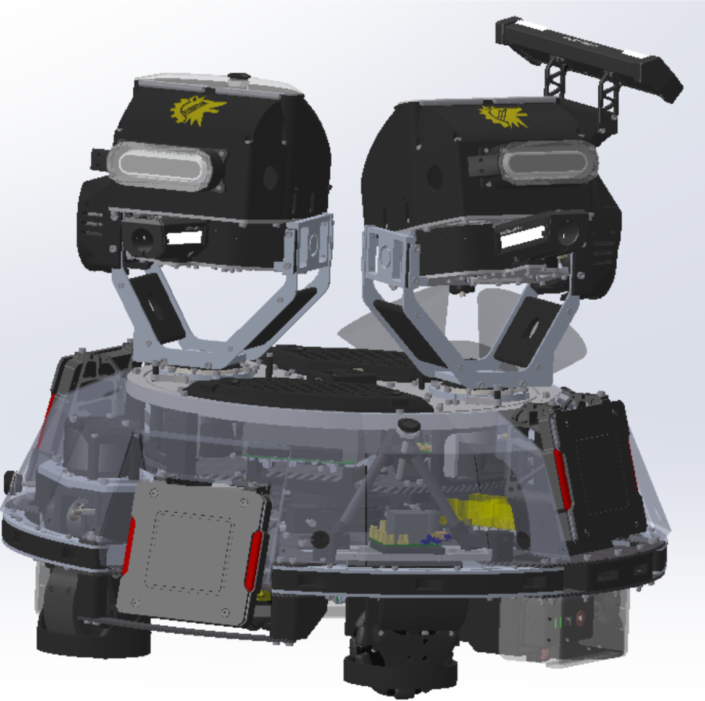
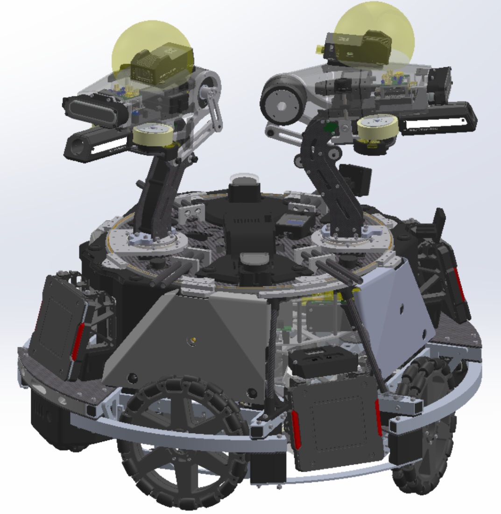

Bottom-Fed Turret Overhaul
A full mechanical rework of the ARUW sentry robot's turret — switching from a top-fed to a bottom-fed architecture, aligning the center of gravity with the yaw axis, and cutting the minor turret weight by 41%.
Why redesign it
The 2025 sentry used a top-fed ball hopper, which placed a large mass high on the robot. That worked fine statically, but the moment the turret started doing fast yaw moves, the high center of gravity produced noticeable oscillation — the minor turret would settle after a traversal instead of snapping to target. For a competition where hit probability depends on how quickly the robot can track and fire, that settle time is expensive.
A secondary issue was mass distribution: the old minor turret was overbuilt in several places, with material added defensively rather than analytically. That added inertia on both yaw and pitch axes, which made the existing motors work harder and limited how aggressively we could tune the control loops.
What I changed
Top-fed → bottom-fed feeding path
I redesigned the ball-feeding path so the hopper sits low in the chassis and balls are lifted into the shooter from underneath. That dropped the overall center of mass significantly. More importantly, it let me reposition the turret assembly so the combined CoG of the turret sits directly over the yaw axis — meaning rapid yaw moves don't create a lever arm fighting the drive motors.
Minor turret: 41% lighter
I went through the minor turret part by part and redesigned any component where the material wasn't doing structural work. The new version is 41% lighter than the 2025 revision while being more rigid in the critical bending directions, and it expanded both the yaw and pitch range of motion. Lighter + stiffer + more range is normally a three-way tradeoff, and reaching it took a lot of FEA iterations and a willingness to throw out parts I'd already spent time on.
Assembly and serviceability
One thing I learned from the 2025 robot was that parts you can't easily remove become parts you don't service. I redesigned the mounting interfaces so the whole minor turret can be removed as a subassembly for maintenance — important at competition, where time between matches is short.



Results
Aiming stability improved noticeably — fast yaw traversals settle faster because there's no longer a high-mounted mass swinging past the target. The lower-inertia minor turret also let the firmware team tune pitch and yaw loops more aggressively without running into mechanical resonances.
On the practical side, the bottom-fed hopper holds more balls, is faster to reload between rounds, and the serviceable minor turret subassembly has paid for itself every time we've needed to swap a motor or inspect a bearing at competition.